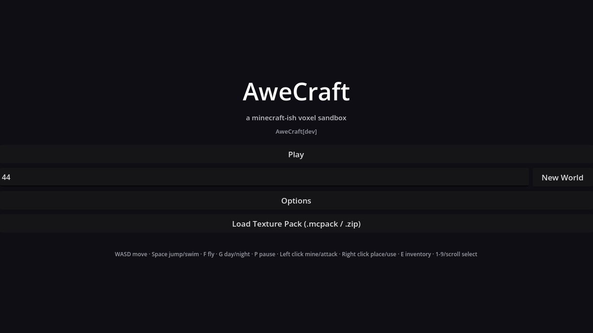
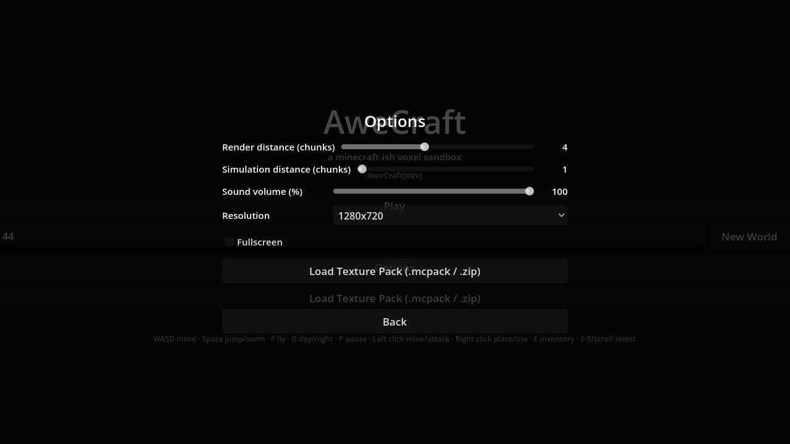
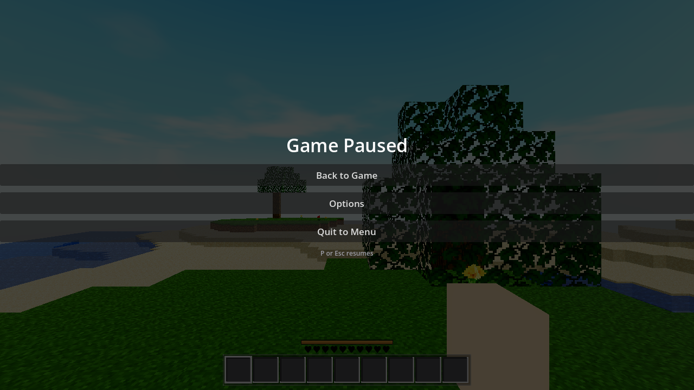
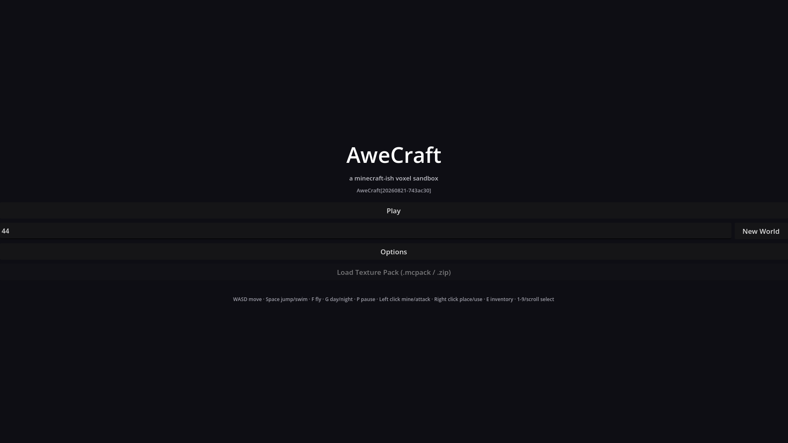
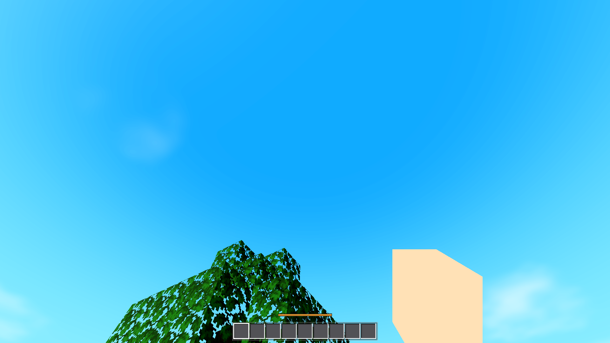
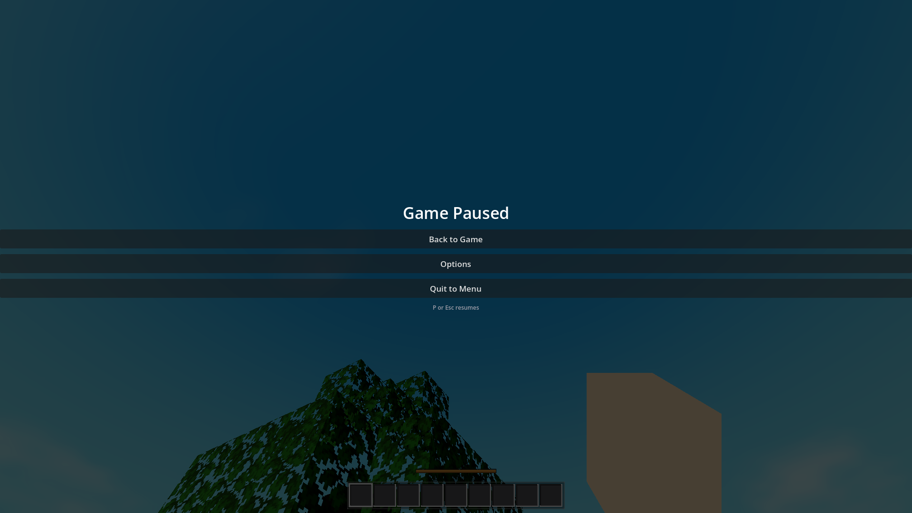
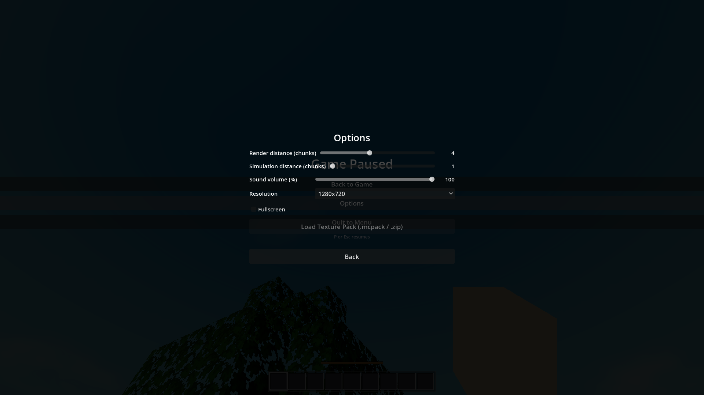
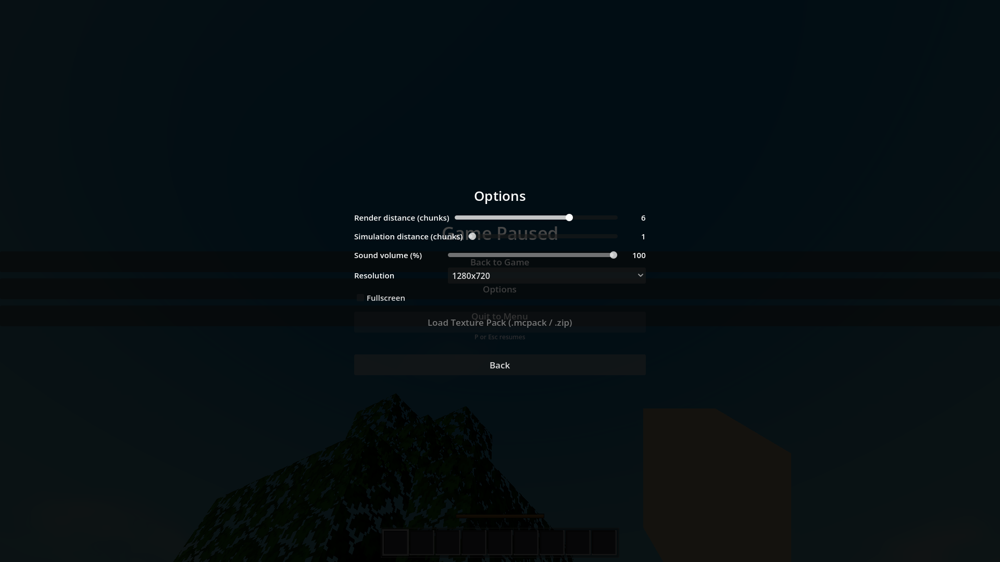
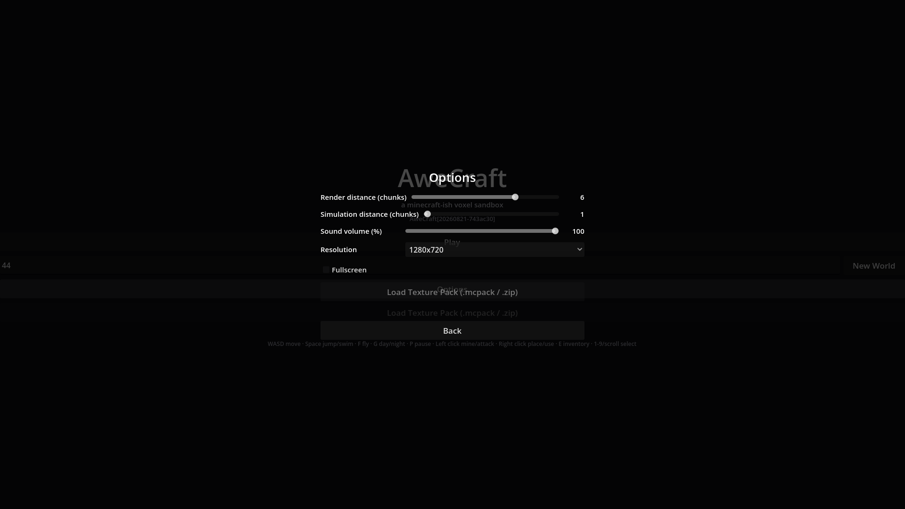

2026-08-21 · Phase 1 = menu-invisible render bug root-caused + fixed · Phase 2 = menu-first boot flip, P pause, options end-to-end, build version, web browser gates. Web rebuilt (stamp 20260821-743ac30).
Two independent wiring bugs made the menu invisible under Xvfb/llvmpipe (uniform 77,77,77 frame): (1) menu.gd built main_box/pause_box/options_box as dangling references — add_child() was never called, so nothing 2D was in the tree; (2) the menu path never created a Camera3D, so the root viewport ran no 3D pass and collapsed to the default clear color (0.3,0.3,0.3) = (77,77,77). Fix: 13 lines in 2 files (boxes added in _ready; idempotent _setup_menu_camera() in main.gd). Aero grade/sky ruled out by A/B (AWECRAFT_AERO=0 still gray). Detail in AC-0033-phase1.html.
main.gd _ready: any real display platform (headless excluded) boots the main menu unless AWECRAFT_MENU=0 (explicit game-first skip, verified by run). play_clicked → existing start_game(Settings seed) path; seed LineEdit + New World intact.HARNESS_ENVS list + _harness_env_set(): AWECRAFT_LOGIC, AWECRAFT_SNAPSHOT, AWECRAFT_INV, AWECRAFT_FLUID_SHOT, AWECRAFT_CAM, AWECRAFT_HELD, AWECRAFT_WALK_SHOT, AWECRAFT_EMPTYHAND, AWECRAFT_SWING, AWECRAFT_FPV_ITEM, AWECRAFT_ANIM_SHOT, AWECRAFT_PROBE, AWECRAFT_BCELL, AWECRAFT_MESH_INFO, AWECRAFT_ONLY, AWECRAFT_DBG, AWECRAFT_SETTLE_TICKS, AWECRAFT_SEED, AWECRAFT_TIME, AWECRAFT_ANIM_PHASE, AWECRAFT_SIZE all start straight into the game. Verified by running the full 22-mode battery after the flip. _run_game now loads default (deterministic) settings when any harness env is set, so user settings can't drift harness numbers.ui_pause input action added to project.godot (physical P). player.gd: P (or ui_pause action) while playing, inventory closed, not dead → Game.pause() → existing pause_box shown via the mode watcher in main.gd. While open: player physics/look/mine locked (Game.mode != "play" gates, already in place). What keeps running — matched to the frozen web (index.html:3217 loop gate state==='play'||state==='pause'||state==='dead'): sky, updateWorldStreaming (chunk recenter/mesh drain), fluids (tickFluids; world.gd fluid timer now ticks in pause mode too), atlas anims — while player/mob/drop/attack update is stopped (index.html:3224 gates those on state==='play' only). Esc/E keep inventory-close; Esc and P both close pause menu (menu.gd). "P pause" in the main-menu help line; "P or Esc resumes" hint under the pause buttons. No key-rebinding UI.Settings.apply_render_distance() = world render radius + recenter(); sim-distance slider (chunks, internal ±n×16 blocks) → fluid_tick_radius; volume slider → Master bus linear db; texture-pack apply = existing Atlas.import_pack file-dialog pipeline (desktop); fullscreen toggle + resolution dropdown (1280x720 / 1600x900 / 1920x1080 / 2560x1440 + current) → Window mode/size. PERSISTENCE: user://awecraft.cfg ConfigFile, loaded at boot, saved on every change — verified headless (round-trip) and in the browser (value survives page reload → IndexedDB on web).godot/core/build_id.gd around the export, restores "dev" after; fallback "dev" in-tree). Menu shows AweCraft[<Build.ID>]; web build stamped 20260821-743ac30 and displays it (web menu screenshot below).OS.has_feature("desktop") is false under xvfb-llvmpipe (only linuxbsd; verified with a standalone probe) — the old menu gate would have silently run game-first in CI-style renders. New gate = "not headless AND not AWECRAFT_MENU=0", which covers desktop + web correctly.~/tools/godot/godot --headless --path godot --quit → 0 SCRIPT ERROR (re-run after every code change, incl. final state)
| mode | key assertions (RESULT) |
|---|---|
| player | horizontal_moved 2.82, jump_peak_y 36.43, is_on_floor true |
| interact | breakable_id 2, drop_spawned true, place_ok true |
| light | torch_level 14, surface_eff 15, cave_eff 0 |
| fluids | sea_stable true, water_on_lava_result 25, sideways_lava_result 9 |
| buckets | scoop_before [5,8] → [0,0], inv 140↔139 |
| craft | ok:true — A/B/C/D flow + armor equip/swap/unequip + table sword |
| guiclick | ok:true — all P/R/C1/C2 row + drag gates |
| swing | ok:true — 4 tool types, tier tints, loop_cycles_0.9s 3, walk_bobs 7.82 |
| look | ok:true — LMB-drag + locked pointer deltas |
| combat | ok:true — bare-hand 1 dmg (hp 3.0), weapon_dmg 4, cooldown, death drops |
| water | ok:true — above_top true, standing_on_shore true |
| fpv | ok gates true; tool_held_ok:false = KNOWN PRE-EXISTING (unchanged) |
| tint | ok:true — per-biome grass/snow/sand/leaf/water colors |
| daynight | ok:true — 5006 ms cycle, 0.00842 vs expected 0.00834 |
| atlas | grass_distinct true, has_uv true, uv in range |
| fluidsettle | ticks_to_settle 12, quiet 3, water_final 9925 |
| settings | ok:true — before 4 → saved 5 → reloaded 5, volume 37 round-trip, restored |
| survival | ok:true — hunger drain/regen/starve, armor DR 2.0, eating, respawn |
| editperf | flush_frames 9, max_frame_build_ms 60 |
| perf | all_meshed true, chunks 81, max_frame_ms 63, fog_ok true |
| genhash | 25/25 MD5 hashes, re-run bit-identical (deterministic gate by design prints hashes, no RESULT) |
| trees | ok:true — genhash_gate true, flora samples, per-chunk determinism 25/25 |
The harness envs start straight into the game in every mode above (proven: each ran its scenario and printed its RESULT). AWECRAFT_MENU=0 explicit skip also verified: render returned {"m4":"ok","w":1280,"h":720} game-first with 0 script errors.
AWECRAFT_MENU_SHOT → p2_menu_main.png (863 distinct; MENU_BG (14,14,20)×707 848; white title (255,255,255)×2 485) ·
AWECRAFT_MENU_SHOT+AWECRAFT_MENU_VIEW=options → p2_menu_options.png (540 distinct; panel over dimmed menu) ·
AWECRAFT_MENU_BOOT=1 AWECRAFT_PAUSE_SHOT=1 AWECRAFT_SNAPSHOT + AWECRAFT_NO_FOG=1 AWECRAFT_RADIUS=2 → p2_paused.png (3 045 distinct; world+HUD behind overlay; RESULT {"pause_shot":true,"mode":"pause","w":1280,"h":720}).

p2_menu_main.png — menu (note help line now says "P pause")

p2_menu_options.png — options: render 4 / sim 1 / volume 100 / 1280x720 / fullscreen / pack / Back

p2_paused.png — P pressed after menu→Play: pause box over R=2 world (terrain, trees, water, hearts, hotbar), "P or Esc resumes" hint
./build_web.sh → exit 0; pck 366 858 B; build_id.gd stamped 20260821-743ac30 at export, restored to "dev" after (tree stays clean). Timeline: canvas 1 s → menu at 12 s (Play reached → world at 31 s) → P → pause overlay (dimmed sky (4,48,71) = 255×0.28 overlay, title bright_frac 0.067) → in-game Options (OPTSYNC from=pause render=4 sim=1 vol=100) → render slider 4→6 (value label redraws) → Esc → reload → menu at 87 s → Options again: OPTSYNC from=main render=6 sim=1 vol=100 = persisted across reload (user:// → IndexedDB). Console: 0 errors, 0 pageerrors (only 8 log lines, incl. the 2 OPTSYNC diagnostics). Web menu shows AweCraft[20260821-743ac30].

p2_web_menu.png — web boots into the menu; build stamp AweCraft[20260821-743ac30] visible; "P pause" in help line

p2_web_playing.png — after clicking Play, world streaming (aero sky + terrain)

p2_web_paused.png — P in the browser: dimmed world + pause box (works on web too, where Esc is owned by the browser)

p2_web_options.png — pause → Options in-game (over dimmed world)

p2_web_options_set6.png — render-distance moved to 6 in-game

p2_web_options_persist.png — after page reload, menu → Options: render distance still 6 (console OPTSYNC from=main render=6 = persistence proof)
Atlas.import_pack → apply) is fully working. Atlas.import_pack_mem(PackedByteArray) already exists as the in-memory entry point for a follow-up.AWECRAFT_PAUSE_SHOT=1 (with AWECRAFT_MENU_BOOT=1 AWECRAFT_SNAPSHOT=path) = menu→Play→P→snapshot harness. OPTSYNC print on options open is a permanent diagnostic (env-hook pattern).